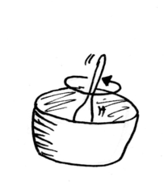

-
 Fleisch etwas kleiner schneiden, mit den Gewürzen würzen und anbraten, in der Zwischenzeit Zwiebeln vierteln und mitbraten.
Fleisch etwas kleiner schneiden, mit den Gewürzen würzen und anbraten, in der Zwischenzeit Zwiebeln vierteln und mitbraten.
- Dose Tomatenmark einrühren und mit den passierten Tomaten ablöschen. Herdplatte auf niedrige Temperatur stellen und schmoren lassen (ca. 2 Stunden).
-  Ab und zu umrühren und immer nur etwas Wasser zugeben, sodass es noch sämig bleibt.
- Ca. eine halbe Stunde vor Ende noch mal kräftig würzen, nicht sparsam sein. Falls die Soße zu dünn sein sollte, einfach ein wenig andicken.
- Dafür gesiebtes Mehl mit etwas Wasser glatt rühren und unter Rühren in die Soße laufen lassen, dann aufkochen. Oder mit einer dunklen Mehlschwitze.